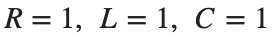
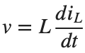
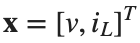
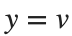
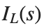
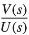
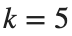
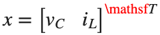
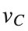
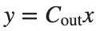

Control Engineering 1 · Week 05 · 상태를 선택해 행렬 모델 만들기
본인 사본에서 코드와 작성란을 직접 수정하세요. 이름: ⟦직접 입력⟧ / 학번: ⟦직접 입력⟧
실행 방법
Live Editor에서 코드 안을 클릭하고 Run Section으로 현재 Section을 실행하세요(Windows/Linux Ctrl+Enter, Mac ⌘+Enter). Run은 문서 전체를 실행합니다. 설명·작성란은 직접 편집하세요.
처음에는 위에서부터 실행하고, 값을 바꾼 Section은 다시 실행하세요. 변수가 없다는 오류가 나면 앞 Section부터 실행하세요. 출력은 코드 아래 또는 오른쪽에 표시됩니다.
환경: MATLAB Online과 Control System Toolbox.
1. State Equation 유도
아래 계산을 먼저 수행한 뒤 MATLAB 결과와 비교하세요.
- R, L, C가 같은 두 Node 사이에 병렬로 연결된 회로입니다. 아래 Node를 기준 전위로 두고, 위 Node의 전압을 v, 위에서 아래로 흐르는 인덕터 전류를
 , 공급 전류를 u로 정하세요.
, 공급 전류를 u로 정하세요. 
에서 KCL과
를 이용해
의 두 Differential Equation과 출력
를 직접 쓰고 를 구하세요.- Initial Condition을 0으로 놓고 두 식을 Laplace Transform하세요. Inductor 관계식에서

를 로 나타낸 뒤 KCL 식에 대입하세요. 가 포함된 항을 모아
로 나타낸 뒤 KCL 식에 대입하세요. 가 포함된 항을 모아 
를 구하세요. - 일정 전류 1 A를 충분히 오래 공급하면 v와 이 각각 얼마가 되는지 먼저 적으세요.
- 직접 구한 행렬로 ss 모델을 만들고 tf·dcgain으로 검증하세요.
- 이 병렬 회로는 아래 RL 직렬 가지 회로와 구성이 다릅니다.
- 이번에는 RL 회로의 R 반복 세 값 중 한 값을 이 비교로 대신하세요.
코드 실행 전 — 손으로 계산한 식과 값: ⟦여기에 계산을 적으세요⟧
코드 실행 후 — 비교할 MATLAB 출력값: ⟦출력값을 적으세요⟧
2. Mechanical State Space
기준 모델을 함수 없이 매번 새로 만듭니다.
실행 전 예상: ⟦직접 입력⟧
M=1;b=2;k=5;
A=[0 1;-k/M -b/M];B=[0;1/M];Cout=[1 0];D=0;
sys=ss(A,B,Cout,D);disp(size(A));disp(tf(sys));
figure;step(sys,10);grid on;
assert(abs(dcgain(sys)-1/k)<1e-10);
직접 수행:
- 기계 모델의 ,

는 유지하고 에서 A와 sys를 다시 만드세요. Position의 Step Response 세 개를 같은 시간축에 그리고 범례에 b를 적으세요. - 각 곡선의 진동 유무와 수렴하는 양상을 대조하세요. 어떤 b의 곡선을 근거로 판단했는지 적으세요.
- 같은 State 순서에서 출력만 Linear Velocity로 선택하세요. 사용한 Cout과 dcgain(sys)를 Position 출력일 때의 값과 나란히 기록하세요.
% ✍ 직접 작성: 아래에 본인 코드를 추가하세요.
바꾼 조건: ⟦직접 입력⟧
실제 결과: ⟦직접 입력⟧
예상과 차이 및 원인: ⟦직접 입력⟧
3. Electrical State Space
전류원 입력, 커패시터 병렬의 RL 가지, 저항 전압 Output입니다.
실행 전 예상: ⟦직접 입력⟧
R=3;L=1;Ccap=.5;
A=[0 -1/Ccap;1/L -R/L];B=[1/Ccap;0];Cout=[0 R];D=0;
sys=ss(A,B,Cout,D);
figure;step(sys,15);grid on;
assert(abs(dcgain(sys)-R)<1e-10);
직접 수행:
이 회로의 State는  은 RL 직렬 가지의 전류 [A]입니다.
은 RL 직렬 가지의 전류 [A]입니다.

입니다.
는 커패시터 전압 [V],- 기준 회로의 다른 계수는 유지하고 에서 A, Cout, sys를 다시 만드세요.
- 입력 1 A에 대한 최종 출력 전압을 dcgain(sys)로 구하고, R과 전압을 두 열로 기록하세요.
- Ccap은 Capacitance, Cout은 출력 행렬임을 적으세요. State의 순서와 Cout을 사용해 출력식

를 쓰고, 원하는 저항 전압을 나타내는지 판단하세요.
% ✍ 직접 작성: 아래에 본인 코드를 추가하세요.
바꾼 조건: ⟦직접 입력⟧
실제 결과: ⟦직접 입력⟧
예상과 차이 및 원인: ⟦직접 입력⟧
4. State 좌표와 초기값
위치와 속도에 초기값을 주면 입력 없이도 응답합니다.
실행 전 예상: ⟦직접 입력⟧
sys=ss([0 1;-5 -2],[0;1],[1 0],0);
figure;initial(sys,[1;0],0:.01:10);grid on;
직접 수행:
- 기준 모델과 같은 시간축에서 initial(sys,[0;1],0:0.01:10)와 initial(sys,[1;0],0:0.01:10)를 그리세요. 두 곡선의 범례에 Initial State를 적으세요.
- 어느 State가 0이 아닌 값에서 시작하는지와 외부 입력 유무를 적으세요. Initial State가 0인 Step Response와 Initial State에 의한 출력을 구별해 설명하세요.
% ✍ 직접 작성: 아래에 본인 코드를 추가하세요.
바꾼 조건: ⟦직접 입력⟧
실제 결과: ⟦직접 입력⟧
예상과 차이 및 원인: ⟦직접 입력⟧
반복 숙달과 제출 전 확인
앞의 직접 수행에서 비교한 조건 세 가지를 아래에 정리하세요. 이미 수행한 실험을 추가로 반복할 필요는 없습니다. 예상은 정확한 수치 대신 증가·감소 방향으로 적어도 됩니다.
반복 1 — 조건: ⟦직접 입력⟧ / 예상: ⟦직접 입력⟧ / 실제: ⟦직접 입력⟧
반복 2 — 조건: ⟦직접 입력⟧ / 예상: ⟦직접 입력⟧ / 실제: ⟦직접 입력⟧
반복 3 — 조건: ⟦직접 입력⟧ / 예상: ⟦직접 입력⟧ / 실제: ⟦직접 입력⟧
선택:
예: 출력으로 선택할 State를 잘못 지정한 경우
- 기계 모델의 A,B,D는 유지하세요. Position이 필요한데 Cout=[0 1]을 썼을 때와 Cout=[1 0]일 때의 Transfer Function을 기록하세요.
- State의 순서와 각 출력의 단위를 적으세요. Position을 출력하도록 Cout 한 줄만 수정하고 모델을 다시 만드세요.
코드, 실제 Output·그래프, 직접 작성한 해석을 포함하세요. 제출은 KLAS를 이용하며 기한은 학기 일정과 최신 공지를 확인합니다.
파일명: 이름_학번_5주차.mlx.